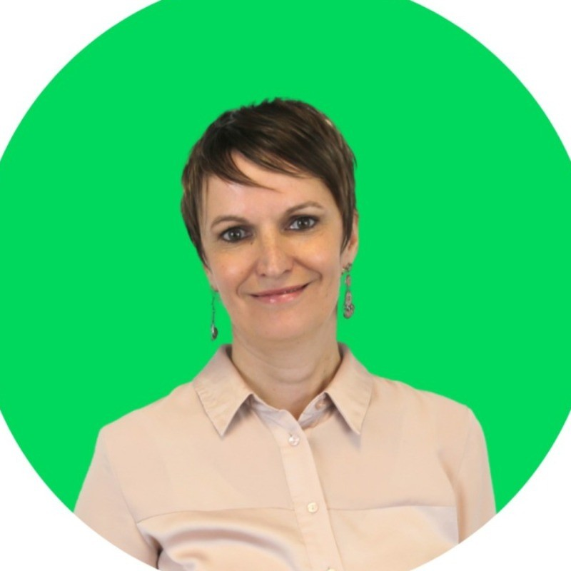

Selected work spanning data visualization at Earth.Org, freelance content and conversion work for Zest, DTC writing for The DTC Times, and independent research. MSc Molecular Medicine, Imperial College London.
A 72-piece series mapping sea level rise to 2100 city by city, produced in about six weeks. Built from Climate Central's coastal risk tool and peer-reviewed projections (Kopp et al., Kulp and Strauss, Muis). Work from the series has been cited in US law reviews and university research.
Two separate freelance engagements for Zest, an HR SaaS platform. The 2023 work focused on audience research, messaging strategy, and a cold email campaign. The 2026 work included a pillar page rewrite that moved from position 12 to position 2, a questionnaire generator built from Zest's own methodology, and an ROI calculator cited by three industry outlets.
Applying post-2000 extraction rates to the Scanlon et al. 2012 PNAS depletion projection moves the estimated depletion date from 390 years out to 234 years out. The analysis draws from CVHM model output (Liu et al. 2022) stitched with NASA GRACE and GRACE-FO satellite data. This extends the published model. The original volume estimates were not independently re-verified.
A standalone explainer covering the full measurement stack: attribution windows, last-click versus multi-touch models, first-party pixels, server-side tracking, CAPI, and incrementality testing methods including A/B, holdout, and geo-based approaches. Includes a sponsored section on Triple Whale Sonar and its role in closing tracking gaps at scale.
Covers Meta's Performance Summit and the industry shift toward incrementality-based advertising, including their third-party analytics integration with explicit coverage of Triple Whale and Taylor Holiday's response. Includes a breakdown of what incrementality means for brands at different spend levels and a summary of Sean Frank's research across more than 100 founders.
Data-driven breakdown of omnichannel halo effects using Haus.io research: 97% of ads drive positive lift on Amazon, with social and video outperforming search halo effects by 700%. Also covers ad iteration methodology using real spend data across 17 accounts and $12.4M in spend, and what separates 8-figure brand operations from the rest.
A two-part breakdown covering a creative development framework across emotion, angle, concept, and medium, and an analysis of why ROAS-optimised brands eventually saturate demand. Makes the case, using Preston Rutherford's research, for measuring 180-day full-price LTV as a more reliable performance signal.
"Owen is one of those growth marketers who's just as comfortable in a strategy conversation as he is deep in a spreadsheet debugging GA4 tracking issues. He reported to me while running Semrush's acquired email assets, The Growth Bulletin and The Early Checkout. He didn't just keep the lights on. He completely overhauled our email program. Owen handled complex platform migrations from ActiveCampaign to Beehiiv, executed full rebrands, and fixed deliverability problems that were killing our reach. At one point he made the call to cut 50K unengaged contacts from our list to save our sender reputation. That's the kind of decision that takes guts and business sense. Whether he was tracking down data discrepancies or running content experiments that doubled our click volume, he owned it completely. He never made excuses and was fully transparent when things didn't work. He's calm under pressure, manages contractors and budgets well, and treats whatever channel he's running like it's his own business. I highly recommend Owen for any growth role."

"J'ai eu le plaisir de collaborer avec Owen et je le recommande sans hesitation. Owen dispose d'une excellente capacite d'analyse et saisit rapidement les enjeux d'un projet. Il sait transformer ses analyses en plans d'action concrets et efficaces, parfaitement adaptes aux objectifs. Au-dela de ses competences techniques, Owen apporte une vraie valeur par sa collaboration naturelle. C'est un professionnel sur qui on peut compter. Owen reunit toutes les qualites d'un excellent growth marketer : rigueur analytique, pragmatisme et intelligence relationnelle. Je le recommande les yeux fermes."
MSc Molecular Medicine, Imperial College London. Former Data Journalism Team Lead at Earth.Org (Jan 2020 to Jan 2022), contributing to the site's growth from 10,000 to 680,000 monthly clicks over that period. Work cited by peer-reviewed journals, US law reviews, and government agencies. Repeatedly rehired by Semrush and Zest.
owenhmulhern@gmail.com
Additional work available on request: Earth.Org data journalism, B2B SaaS content, and Semrush SMB publications.